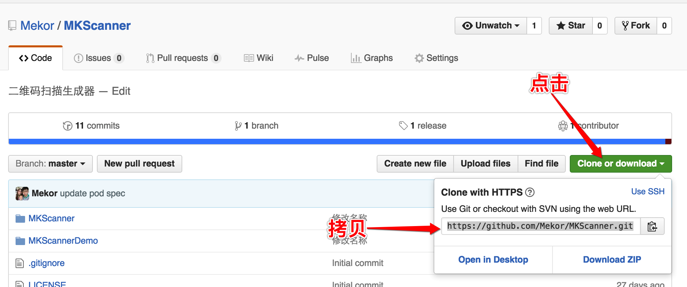

为项目添加podspec
全文来自:iOS开发-- 创建podspec文件，为自己的项目添加pod支持 只是在文章中添加了原文没有说明的东西&步骤
1.clone项目源码
项目如果没有在github仓库中,先上传到github仓库,然后clone到本地,已经存在就直接clone到本地
// cd 到 想要存放项目的文件夹中执行
git clone https://github.com/Mekor/MKScanner.git
https://github.com/Mekor/MKScanner.git这个是我自己的仓库,这个仓库地址可以在这里找到

2. 创建项目的podspec文件
• 用终端命令cd到本地项目目录并执行如下命令:
$ pod spec create MKScanner
MKScanner替换为自己的项目名称,这时在本地就会生成一个MKScanner.podspec
• 用编辑器打开.podspec文件 (我自己用Sublime Text)
删除不必要的注释(这里只简单介绍基本用法，所以只用到一部分必须得字段 更多字段请移步http://guides.cocoapods.org/syntax/podspec.html
Pod::Spec.new do |s|
s.name = "MKScanner"
s.version = "0.0.1"
s.summary = "QRCode Scanner"
s.homepage = "https://github.com/Mekor/MKScanner"
s.license = { :type => "MIT", :file => "LICENSE" }
s.author = { "Mekor" => "mekor@live.cn" }
s.social_media_url = "http://weibo.com/gliii"
s.platform = :ios, "7.0"
s.source = { :git => "https://github.com/Mekor/MKScanner.git", :tag => s.version }
s.source_files = "MKScanner/**/*.{h,m}"
#s.resources = "MKScanner/**/*.png"
s.requires_arc = true
end
• 验证podspec文件
编辑完podspec文件后需要验证一下这个文件是否可用podspec文件不允许有任何的Warning或者Error
执行命令
$ pod lib lint
如果出现
-> MKScanner (0.0.1)
MKScanner passed validation.
则说明验证通过， 否则， 根据提示修改podspec文件再次验证直到验证通过
附带说一下，Xcode允许警告存在，所以可以通过命令屏蔽警告
$ pod lib lint --allow-warnings
如果出现Error但是提示信息不足，可以添加--verbose 以获取更多错误信息
$ pod lib lint --verbose
3. 打tag 上传podspec
podspec文件中需要指定的tag， 完成上述操作后给项目打tag
$ git tag -m"first release MKScanner with podspec" "0.0.1"
$ git push --tags
最后使用pod trunk命令，把podspec文件推送到CocoaPod官方库
pod trunk 需要注册,参见:https://guides.cocoapods.org/making/getting-setup-with-trunk.html
其实很简单:
pod trunk register Mekor@live.cn "Mekor"
指明你的邮箱地址（spec文件中的）和名称
CocoaPods 会给你填写的邮箱发送验证邮件，点击邮件中的链接就可通过验证。
pod trunk 设置完毕后执行命令
$ pod trunk push MKScanner.podspec
这个过程可能会比较耗时，原因你懂的
4. 最后
如果一切顺利
pod search MKScanner